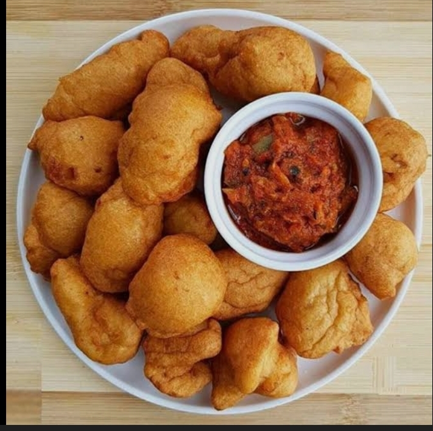

Bean Cake
Bean cake often called akara in West Africa is a crispy,golden-brown fritter made from blended peeled beans,onions,and spices,then deep-fried until fluffy inside and crunchy outside.
Ingredients
- 1 cup of white beans
- 2 large tomatoes or 1 teaspoon tomato paste
- 2 large peppers
- 1 medium onion and salt to taste
Instructions
- Soak beans,remove skins and grind till smooth.
- Grind the onion, peppers and tomatoes.Then heat the oil.
- Mix the ground beans with other ingredients and add salt to taste.
- Form into balls or flat cakes and fry in deep fat until crisp and brown.
